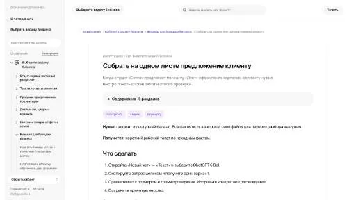

P
PrometAIСоздание контента
«PrometAI» помогает оформить бизнес-план.
Раздел «Для стартаперов»: варианты ИИ для этой задачи, описания возможностей и переходы к обзорам. Сравните несколько решений на одинаковом примере.
Соберите проблему, известные возможности продукта и следующий шаг для клиента. Молекула поможет сжать предложение до понятного документа; неподтверждённые результаты оставляйте в списке гипотез.
Сделай одностраничное предложение сервиса записи в небольшие мастерские. Используй факты из брифа, обозначь текущие ограничения и предложи обсуждение пилота. Количество клиентов не выдумывай.

«PrometAI» помогает оформить бизнес-план.
Сравнивать «Turbosite» с другими инструментами раздела «Конструкторы сайтов и лендингов» удобнее на одинаковом исходном материале.
AI Business Plan Generator от Upmetrics помогает готовить бизнес-планы с ИИ-письмом и финансовыми материалами. В наборе предусмотрены создание презентации и ресурсы для работы над предпринимательской идеей. Продукт рассчитан на предпринимателей и учебные задачи, объединяя текстовое описание проекта с подготовкой его финансовой и презентационной части.
Kahuna помогает экспертам организовать консультации по подписке. В рабочей панели можно управлять вопросами и подписками, а ИИ используется для персонализированных советов. Продукт объединяет коммерческое предоставление знаний с обработкой обращений подписчиков, позволяя вести этот консультационный процесс в одном окружении специалиста.
«MyPortfolio» представлен в разделе «Конструкторы сайтов и лендингов». При выборе проверьте нужную операцию и условия работы с результатом.
«side-hustle AI» представлен в разделе «Бизнес». При выборе проверьте нужную операцию и условия работы с результатом.
Для «Zarla Website Builder» сначала определите свою задачу и требуемый результат. Карточка относится к направлению «No-code и Low-code платформы».
«AI Landing Page Builder» помогает собрать сайт или веб-приложение.
Сравнивать «ApiX-Drive» с другими инструментами раздела «Бизнес» удобнее на одинаковом исходном материале.

Canva объединяет редактор макетов и инструменты ИИ для текста и изображений. Подходит для оформления публикаций, презентаций и материалов с редактируемыми слоями.
«CopyCat» создаёт видеоматериал по заданию. Дополнительно «CopyCat» помогает подготовить персонализированный видеоматериал.
Supa Doc создаёт документы с помощью ИИ, используя шаблоны для разных задач. Среди примеров предусмотрены бизнес-планы и тестовые случаи. Продукт ориентирован на подготовку первоначального содержимого документа, где выбранный тип материала задаёт его структуру; факты и требования к готовому тексту необходимо сверять самостоятельно.
«Venturekit» помогает оформить бизнес-план.
«Vossle» помогает собрать сайт или веб-приложение.
Zeni используют для задачи: обрабатывать финансовые документы и записи. Ещё одно направление работы: собирать видео с цифровым ведущим.
«AI Name Generator» представлен в разделе «Генератор имен». При выборе проверьте нужную операцию и условия работы с результатом.

Akkio предлагает средства работы с данными и построения прогнозов без написания кода. На платформе предусмотрены преобразование исходной информации, разбор данных и моделей, а также их развёртывание. Пользователь работает со своими материалами; полученный прогноз остаётся модельной оценкой, а не известным будущим результатом.
«Criya» помогает собрать сайт или веб-приложение. «Criya» помогает планировать рабочее расписание.

DeepSeek используют для разговорных задач, объяснения кода и подготовки программных решений. API позволяет встроить модель в приложение, управляя входными сообщениями и обработкой ответа.
«Informly Idea Validator» представлен в разделе «Бизнес». При выборе проверьте нужную операцию и условия работы с результатом.
«M1-project» представлен в разделе «Бизнес». При выборе проверьте нужную операцию и условия работы с результатом.
AI Business Idea Generator создаёт бизнес-идеи и подготавливает план с учётом выбранной аудитории и отрасли. В работу входят способы получения дохода и технологические решения. Инструмент также рассматривает конкуренцию, необходимые навыки и нормативные вопросы, связывая замысел с условиями его реализации.
«AI Cartel - AI Recruiter» помогает организовать работу по подбору персонала.
«BoostAITraffic» представлен в разделе «Бизнес». При выборе проверьте нужную операцию и условия работы с результатом.
Для «Canvas AI» сначала определите свою задачу и требуемый результат. Карточка относится к направлению «Бизнес».
«DIY AI Website Builder» помогает собрать сайт или веб-приложение.
Helpfull - Business Name Generator придумывает варианты названия компании с участием ИИ. Продукт Elevate Brand Works ориентируется на целевую аудиторию и поиск подходящего имени. Пользователь проходит последовательность подготовки, получая идеи для представления будущего бизнеса и дальнейшего выбора названия своего бренда.
Сравнивать «Maxychat» с другими инструментами раздела «Бизнес» удобнее на одинаковом исходном материале.
Merch Dominator исследует рынок печати по требованию и помогает рассматривать товарные ниши. В инструментах представлены анализ тенденций, востребованные продукты, ключевые слова и проверка товарных знаков. Программа связывает подбор ассортимента с рыночным исследованием, чтобы готовить идеи для бизнеса в этом формате производства.
Presentacium создаёт презентации по теме или загруженному тексту с участием ИИ. Российский сервис подбирает шаблоны и изображения, а также структурирует содержание слайдов. Встроенный редактор PPTX и экспорт в PDF или изображения дополняют работу, доступную через браузер на разных устройствах пользователя.

Quickchat AI предназначен для создания корпоративных диалоговых помощников без программирования. Сервис поддерживает общение на разных языках и ориентирован на вопросы клиентов, продажи, кадровые задачи и сведения о продуктах. Его основная роль состоит в настройке помощника под выбранный рабочий контекст компании.
Сравнивать «Skip» с другими инструментами раздела «Бизнес» удобнее на одинаковом исходном материале.
Сравнивать «VenturusAI» с другими инструментами раздела «Бизнес» удобнее на одинаковом исходном материале.
Wordybot помогает подготавливать развёрнутые тексты на русском языке, включая статьи и учебные работы. Сервис составляет план и предоставляет встроенный редактор для изменения фрагментов. Экспорт в Word дополняет создание книг, сценариев и бизнес-планов, связывая подготовку материала с дальнейшим редактированием документа.
«A Million Dollar Idea» представлен в разделе «Бизнес». При выборе проверьте нужную операцию и условия работы с результатом.
EDOM AI помогает обсуждать предпринимательские идеи и получать советы для развития бизнеса. Пользователь обращается к стратегиям компаний и предпринимателей, представленным в сервисе. Помощник объединяет генерацию замысла с рекомендациями по предприятию, чтобы рассматривать новое направление рядом с существующими деловыми подходами.
«Enif» разбирает данные для рабочего анализа.
Сравнивать «Escape AI» с другими инструментами раздела «Создание контента» удобнее на одинаковом исходном материале.
Flowpoint AI анализирует поведение посетителей сайта и предлагает рекомендации средствами ИИ. В описании представлены направления SEO и пользовательского интерфейса, а также вовлечение в контент. Продукт связывает сведения о действиях посетителей с рассмотрением изменений сайта при работе команды над его содержанием.
Сравнивать «Macky» с другими инструментами раздела «Бизнес» удобнее на одинаковом исходном материале.
Для «Mom shop app» сначала определите свою задачу и требуемый результат. Карточка относится к направлению «Бизнес».
«NameSnack» представлен в разделе «Генератор имен». При выборе проверьте нужную операцию и условия работы с результатом.
«15minuteplan AI» помогает оформить бизнес-план.

В инструменте «AKOOL» можно переносить образ лица на изображение или видеокадр. Ещё одно направление работы: собирать видеосцену по описанию или визуальному исходнику.
«Beaseness» помогает оформить бизнес-план.

ChatGPT помогает писать и редактировать тексты, разбирать документы и таблицы, обсуждать код. Поиск, анализ данных и работа с изображениями дополняют чат, когда доступны в выбранном аккаунте.
«Chatio AI» помогает организовать разговор с чат-ботом. «Chatio AI» также связан с обработкой обращений клиентов.

Gamma помогает создавать презентации, документы и страницы из описания и исходных материалов. Перед оформлением важно выстроить аргумент, проверить данные и испытать экспорт.
Страница 2 из 3